ติดตั้งและใช้งาน Allure Report
ติดตั้ง Allure Report สำหรับ Playwright ตั้งแต่ตรวจสอบเครื่องมือ ไปจนถึงเปิดดูผล Test พร้อม Screenshot, Video และ Trace
ตรวจสอบ Node.js และ pnpm
เปิด VS Code → เมนู Terminal → New Terminal และใช้ PowerShell Terminal ที่เปิดอยู่ภายในโฟลเดอร์ Project
เริ่มจากตรวจสอบ Node.js ด้วยคำสั่ง:
node --version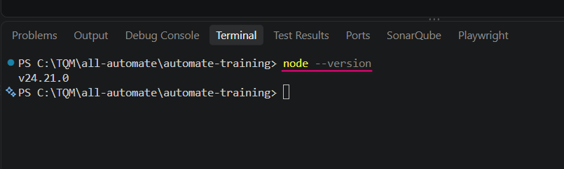
v24.21.0 หมายถึงเครื่องสามารถเรียกใช้ Node.js ได้แล้ว เลข Version ของแต่ละเครื่องอาจไม่เท่ากันจากนั้นตรวจสอบ pnpm ด้วยคำสั่ง:
pnpm --version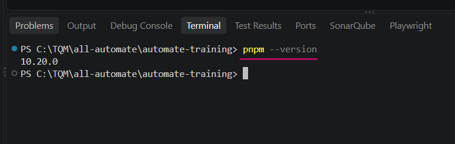
10.20.0 หมายถึง pnpm พร้อมใช้งานแล้ว เราจะใช้ pnpm สำหรับติดตั้ง Package ในหัวข้อนี้ติดตั้ง Allure CLI
allure ให้สามารถเรียกใช้จาก Terminal ได้ที่ PowerShell Terminal ใน VS Code รันคำสั่ง:
pnpm add -g allure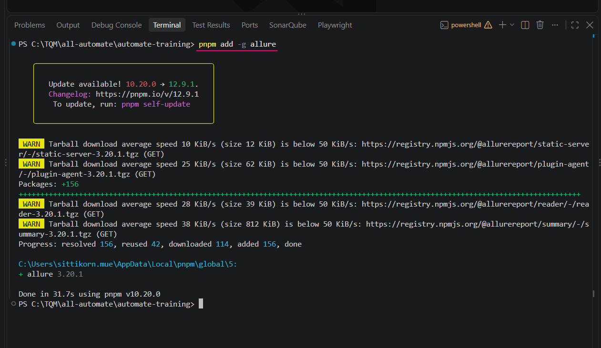
+ allure 3.20.1 และ Done หมายถึงติดตั้ง Allure CLI สำเร็จแล้วTarball download average speed... ในภาพเป็นเพียงคำเตือนว่าดาวน์โหลด Package ช้า ไม่ใช่ Error การติดตั้งยังสำเร็จได้ตามปกติตรวจสอบว่า Allure CLI ใช้งานได้
allure --version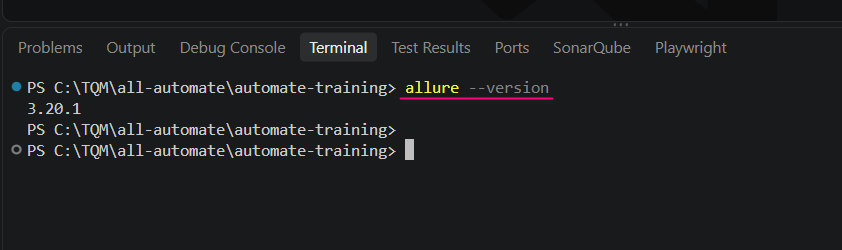
3.20.1 หมายถึงคำสั่ง allure สามารถใช้งานได้เรียบร้อยแล้วติดตั้ง Package สำหรับ Allure ใน Project
ขั้นตอนนี้ใช้ PowerShell Terminal ใน VS Code และต้องอยู่ในโฟลเดอร์ Project เช่น C:\TQM\all-automate\automate-training
4.1 ติดตั้ง allure-playwright
allure-playwright คือ Package ที่ทำหน้าที่ส่งผลการ Run จาก Playwright ไปสร้างข้อมูลในโฟลเดอร์ allure-results
pnpm add -D allure-playwright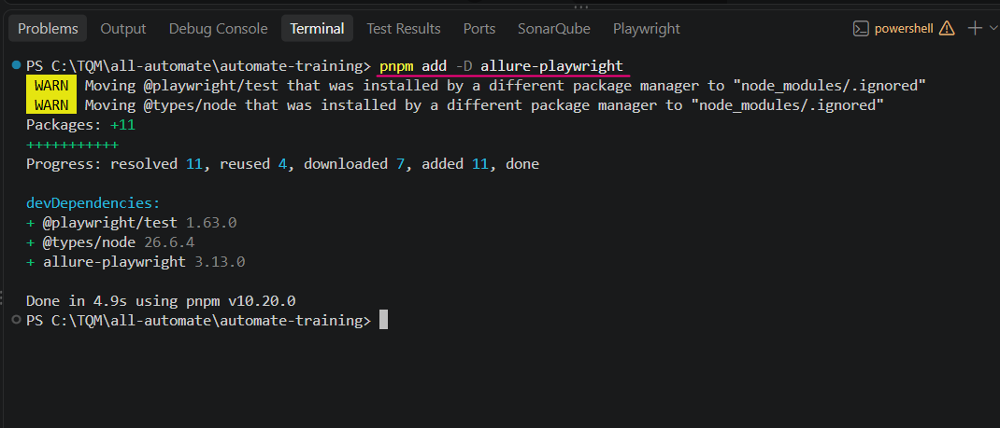
devDependencies มี allure-playwright และขั้นตอนจบด้วย Done หมายถึงติดตั้งตัวเชื่อม Playwright กับ Allure สำเร็จแล้วinstalled by a different package manager หมายถึง Project นี้เคยติดตั้ง Package ด้วย package manager อื่นมาก่อน ไม่ใช่ Error ของ Allure หากจบด้วย Done สามารถทำขั้นต่อไปได้4.2 ติดตั้ง allure-js-commons
allure-js-commons คือ Library ที่ใช้เพิ่มข้อมูลให้ Test Case เช่น Severity, Feature, Story หรือ Label ต่าง ๆ ใน Allure Report
pnpm add -D allure-js-commons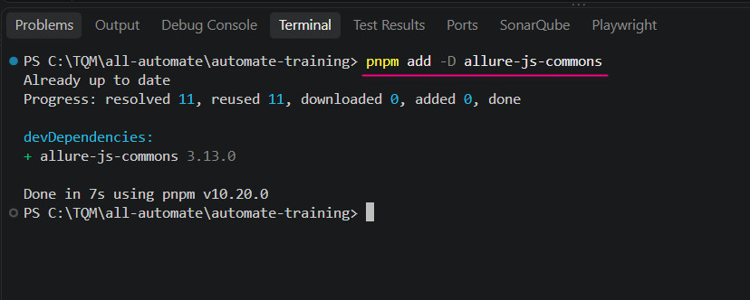
+ allure-js-commons 3.13.0 และ Done หมายถึง Library สำหรับเพิ่มข้อมูลให้ Allure Test Case ถูกติดตั้งแล้วallure-playwright = ตัวเชื่อม Playwright → Allureallure-js-commons = เครื่องมือสำหรับใส่ข้อมูลเพิ่มให้ Test เช่น Severityตรวจสอบ Package ที่ติดตั้งใน Project
pnpm list --depth=0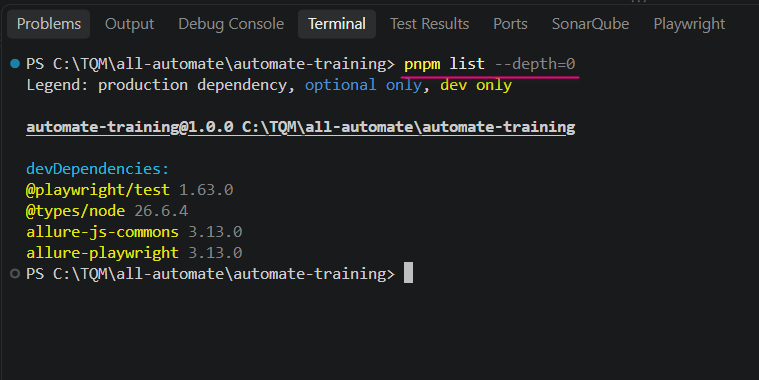
devDependencies ควรเห็นอย่างน้อย @playwright/test, allure-playwright และ allure-js-commons แสดงว่าเครื่องมือสำหรับ Run Test, สร้าง Allure Results และกำหนด Severity พร้อมใช้งานแล้ว@playwright/test, allure-playwright และ allure-js-commons ในรายการ Package แสดงว่าเครื่องพร้อมสำหรับ Workshop แล้ว▶Workshop เริ่มจากจุดนี้
หยุดการติดตั้งไว้ที่ขั้นตอน 5 ก่อน — ตั้งแต่ขั้นตอน 6 เป็นต้นไป ผู้สอนจะพาตั้งค่า Reporter, Severity, Run Test และเปิด Allure Report พร้อมกัน
เพิ่ม Allure Reporter ใน playwright.config.ts
ใน VS Code Explorer คลิกไฟล์ playwright.config.ts จากนั้นหา บรรทัดที่ตั้งค่า reporter ใกล้ด้านบนของไฟล์
['allure-playwright'] ต่อจาก HTML Reporter และต้องมีเครื่องหมาย comma หลังรายการ HTML Reporterreporter: [
['html', { open: 'always' }],
['allure-playwright']
],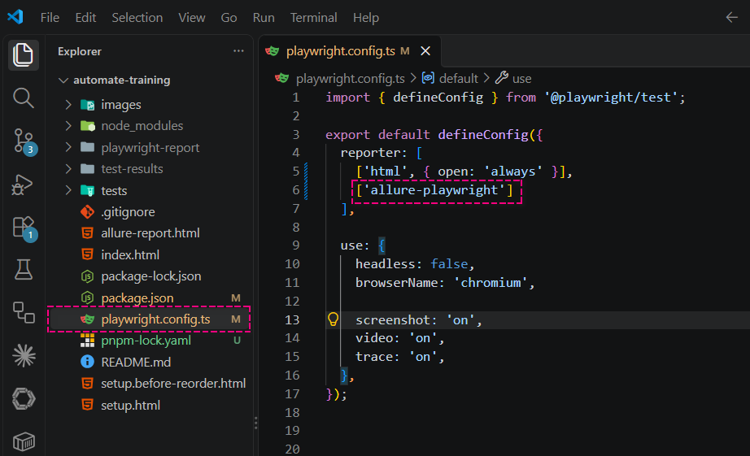
['html', { open: 'always' }] ใช้สร้าง Playwright HTML Report ส่วน ['allure-playwright'] ใช้สร้างข้อมูลให้ Allure ดังนั้น Run Test ครั้งเดียวสามารถได้ผลสำหรับ Report ทั้งสองแบบจัดกลุ่ม Test Case ด้วย Severity
ใน VS Code Explorer เปิดไฟล์ Test เช่น tests/example.spec.ts แล้วเพิ่ม Import และ Severity ให้แต่ละ Test Case
① เปิดไฟล์
tests/example.spec.ts② เพิ่ม Import
allure-js-commons บริเวณด้านบนของไฟล์③ Test Case
has title กำหนดเป็น critical④ Test Case
get started link กำหนดเป็น normalเพิ่ม Import ด้านบนของไฟล์:
import * as allure from 'allure-js-commons';ตัวอย่างกำหนด Severity ให้ Test Case:
// npx playwright test tests/example.spec.ts --headed
import { test, expect } from '@playwright/test';
// import เครื่องมือ test และ expect จาก Playwright
// test ใช้สำหรับสร้าง Test Case
// expect ใช้สำหรับตรวจสอบว่าผลลัพธ์ที่ได้ ตรงตามที่คาดหวังหรือไม่
import * as allure from 'allure-js-commons';
test('has title', async ({ page }) => {
await allure.severity('critical');
// สร้าง Test Case ชื่อ "has title"
// page คือหน้า Browser ที่ Playwright เปิดให้เราใช้งาน
await page.goto('https://playwright.dev/bugs');
// เปิดเว็บไซต์ https://playwright.dev/bugs
await expect(page).toHaveTitle(/Playwright bugs/);
// ตรวจสอบว่า Title ของหน้าเว็บ
// มีคำว่า "Playwright bugs" อยู่หรือไม่
});
test('get started link', async ({ page }) => {
await allure.severity('normal');
// สร้าง Test Case ชื่อ "get started link"
await page.goto('https://playwright.dev/');
// เปิดเว็บไซต์ https://playwright.dev/
await page.getByRole('link', { name: 'Get started' }).click();
// ค้นหาลิงก์ที่มีชื่อว่า "Get started"
// แล้วสั่งคลิก
await expect(
page.getByRole('heading', { name: 'Installation' })
).toBeVisible();
// ตรวจสอบว่าหลังจากคลิกแล้ว
// มีหัวข้อ "Installation" แสดงอยู่บนหน้าเว็บ
});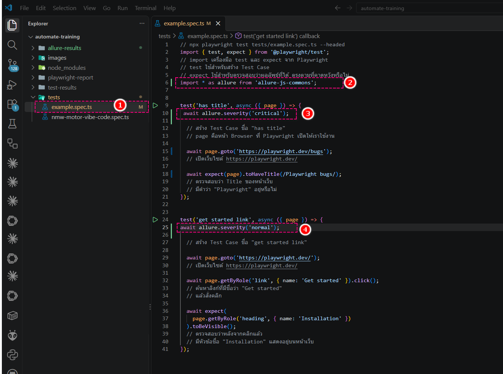
tests/example.spec.ts ใน VS Code แล้วแทนที่โค้ดเดิมในไฟล์ด้วยโค้ดเต็มจากกล่องด้านบน จากนั้นกด Ctrl + S เพื่อบันทึกไฟล์ ผู้เรียนจึงไม่ต้องหาว่าแต่ละบรรทัดต้องนำไปวางตรงตำแหน่งใด1)
import * as allure from 'allure-js-commons'; เพื่อเรียกใช้คำสั่งของ Allure2)
await allure.severity('critical'); กำหนด Test Case has title เป็นระดับ Critical3)
await allure.severity('normal'); กำหนด Test Case get started link เป็นระดับ Normalcritical ส่วน Test ทั่วไปอาจใช้ normalคำสั่ง Severity ที่ใช้ได้
เลือกใช้ เพียง 1 ค่า ต่อ Test Case ตามระดับความสำคัญของ Test นั้น
await allure.severity('blocker');
await allure.severity('critical');
await allure.severity('normal');
await allure.severity('minor');
await allure.severity('trivial');blocker = ปัญหารุนแรงมากจนงานหลักไปต่อไม่ได้critical = ฟังก์ชันสำคัญมาก ควรให้ความสำคัญสูงnormal = Test ทั่วไปminor = ความสำคัญต่ำกว่า Test ทั่วไปtrivial = เรื่องเล็กน้อย ผลกระทบน้อยawait allure.severity('critical'); ไว้ด้านใน Test Case ใกล้บรรทัดแรกหลัง test(...) เพื่อให้หาและแก้ไขได้ง่ายcritical และ normal ก่อน เพื่อให้เห็นความแตกต่างของการจัดกลุ่มโดยไม่เพิ่มความซับซ้อนมากเกินไปRun Playwright Test เพื่อสร้างข้อมูล Allure
ในคู่มือนี้ใช้ pnpm เป็นหลัก ให้รัน Test ด้วยคำสั่งด้านล่าง:
pnpm playwright test tests/example.spec.ts --headedtests/example.spec.ts คือไฟล์ Test ที่ต้องการรัน และ --headed คือให้เปิด Browser ให้เห็นระหว่าง Test ทำงาน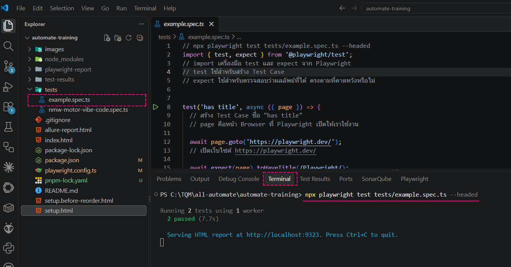
npx playwright test ... แต่ Training นี้กำหนดให้ใช้ pnpm ดังนั้นให้ผู้เรียนคัดลอกคำสั่ง pnpm playwright test ... จากกล่องด้านบน2 passed หมายถึง Test ผ่าน 2 Test Case หลังจากจบรอบนี้ Playwright จะสร้างข้อมูล Allure ตาม Reporter ที่ตั้งค่าไว้ตรวจสอบโฟลเดอร์ allure-results
กลับมาที่ VS Code Explorer แล้วดูบริเวณโฟลเดอร์หลักของ Project ควรพบโฟลเดอร์ allure-results
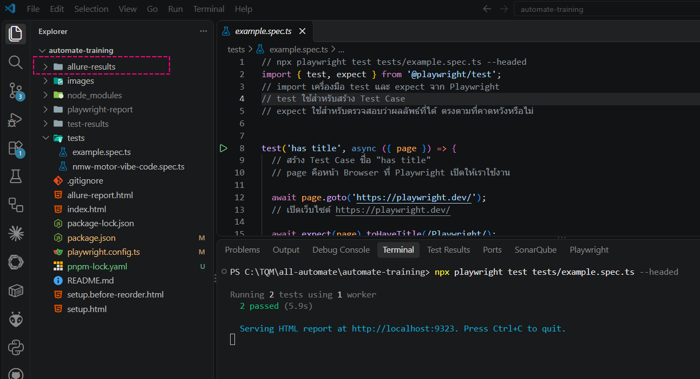
allure-results แสดงว่า allure-playwright ทำงานและบันทึกผล Test สำเร็จแล้ว โฟลเดอร์นี้เป็นข้อมูลต้นทางที่ Allure ใช้สร้างหน้า Reportเปิด Allure Report
กลับไปที่ PowerShell Terminal ใน VS Code แล้วรัน:
allure serve allure-results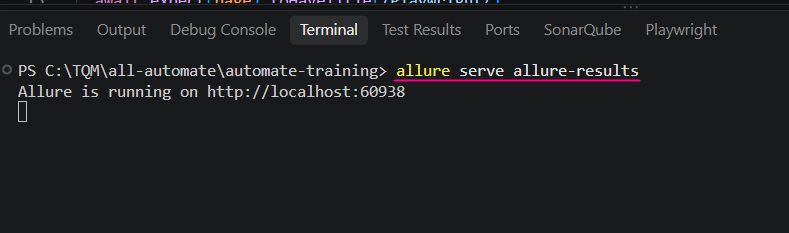
Allure is running on http://localhost:... หมายถึง Allure Report เปิดเป็น Web Server ในเครื่องแล้ว Browser จะเปิดหน้า Report ให้ใช้งาน60938 อาจเปลี่ยนทุกครั้ง ไม่จำเป็นต้องได้เลขเดียวกับในภาพ และให้เปิด Terminal นี้ค้างไว้ระหว่างดู Reportอ่านผล Test ใน Allure Report
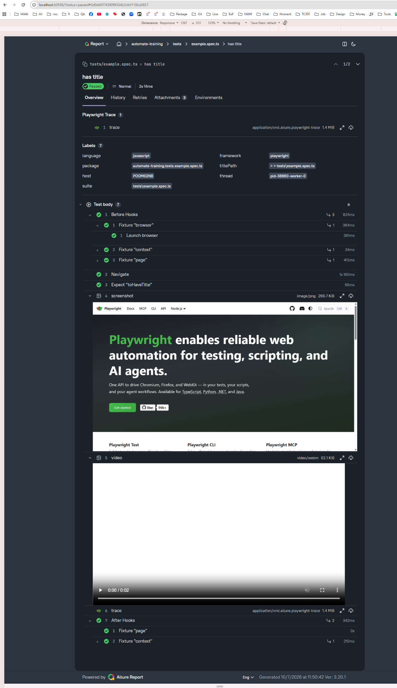
ส่วนนี้เหมาะสำหรับตรวจสอบว่า Test ทำอะไรไปบ้าง และใช้ข้อมูล Screenshot / Video / Trace ช่วยวิเคราะห์เมื่อ Test Fail
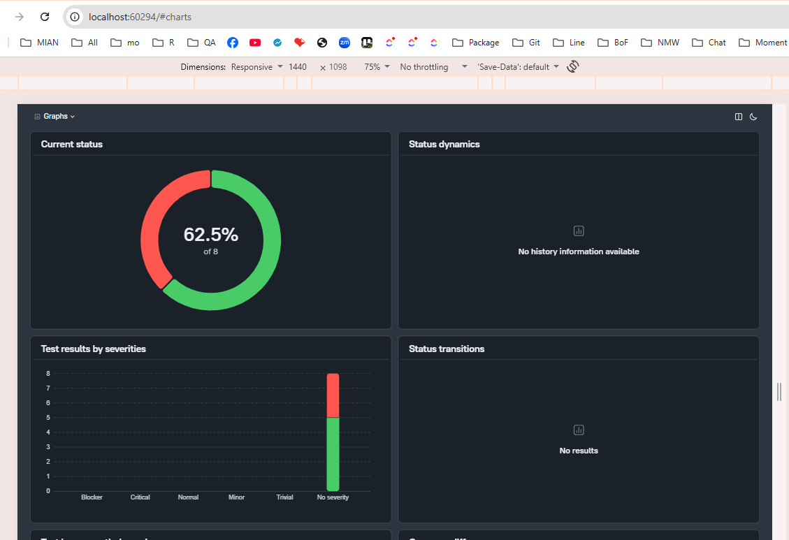
กรอง Test ตาม Severity
ที่หน้า Results คลิกตัวกรอง Severity แล้วเลือกค่าที่ต้องการ เช่น Critical และ Normal เพื่อแสดงเฉพาะ Test Case ในกลุ่มนั้น
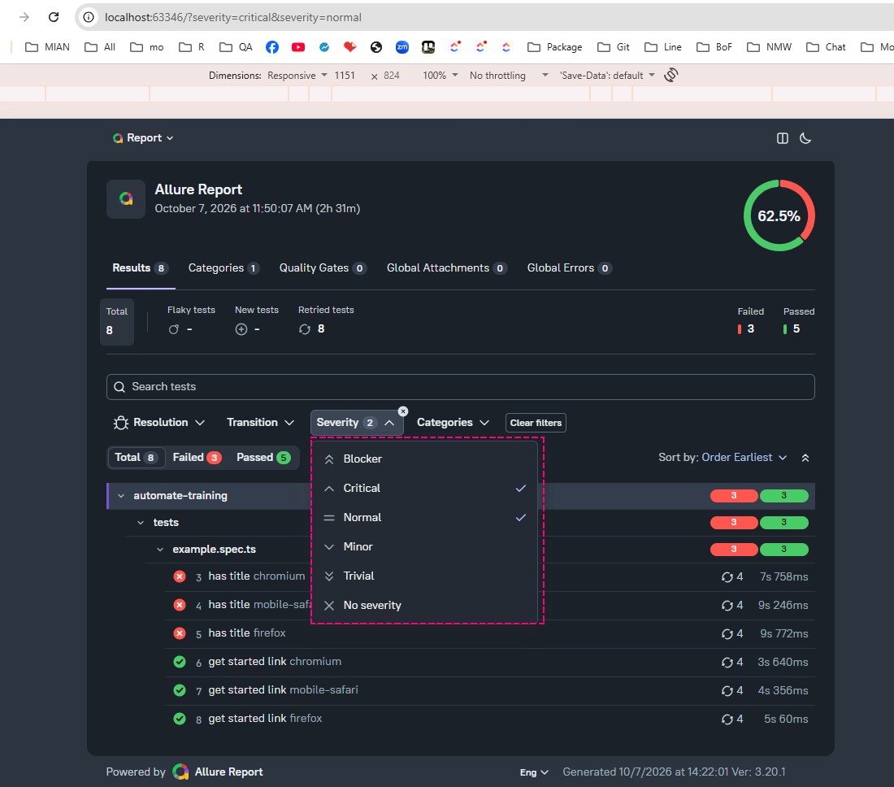
เมื่อมาถึงขั้นนี้ ผู้ใช้สามารถ Run Playwright Test → ได้
allure-results → เปิด Report ด้วย allure serve allure-results และดูรายละเอียด Test บน Browser ได้แล้ว